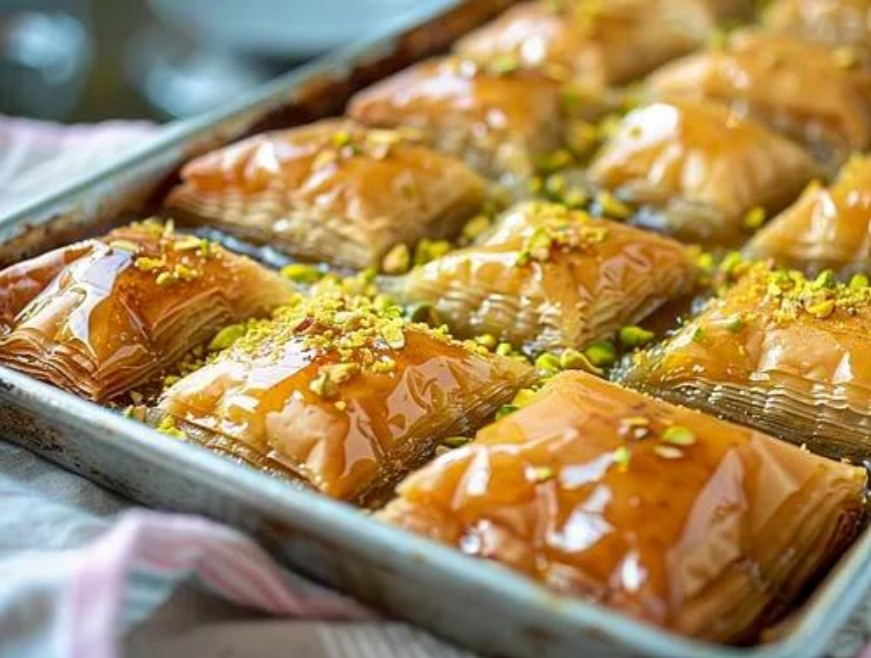

Baklava
Baklava is a classic pastry most famously associated with Türkiye, though it’s also beloved across the Middle East, the Balkans, and parts of the Mediterranean. It’s built from layers of paper-thin yufka or phyllo dough, brushed generously with butter, and filled with finely chopped nuts — often pistachios or walnuts. Once baked to a crisp, golden finish, it’s soaked in a fragrant syrup made from sugar, honey, and lemon, giving it its signature glossy look and sweet, delicate chew.
In Turkish cuisine, baklava holds a special place. Cities like Gaziantep are renowned for their mastery of the craft, especially versions made with bright green pistachios. It’s a dessert tied closely to hospitality, festive occasions, and centuries of culinary tradition from the Ottoman era.
The combination of flaky layers, rich nuts, and aromatic syrup makes baklava both luxurious and comforting — a true icon of Turkish sweets.
Ingredients
- 150 g Hazelnuts, chopped (and/or walnuts)
- 100 g Almonds, ground (peeled)
- 75 g Pistachios, chopped
- 200 g Sugar
- 0.25 TL Cinnamon powder
- 250 g Butter
- 450 g Filo pastry
- 125 ml Honey
- 150 ml Water
- 0.5 Lemon(s)
- Butter for the mold
How to Make It
- Mix almonds, walnuts, hazelnuts and 50 g of pistachios with 4 tablespoons of sugar and the cinnamon powder. Melt the butter and allow to cool. Grease an ovenproof baking dish with butter and preheat the oven to 200 °C top/bottom heat or circulating air 180 °C.
- Place all the dough sheets on top of each other. Place the oven-proof baking pan on the dough leaves in reverse, cut once around the mold with a sharp knife.
- Brush the cut-out dough leaves with butter and place them in the mold one after the other. After approx. 5 leaves of dough, spread about 1/3 of the nut mixture on top. Repeat layers and finish with dough sheets. Cut into diamond or rectangular shapes and brush with remaining butter.
- Bake in the hot oven approx. 25 minutes until golden brown.
- While baking, cook water with honey and remaining sugar for 10 minutes to make syrup. Stir in a splash of lemon juice and let cool.
- Remove the baklava from the oven, let sit for 5 minutes, then pour over the syrup. Sprinkle remaining pistachios and let cool further.